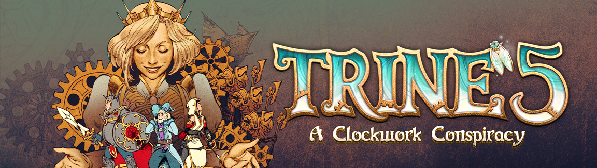

Trine 5: A Clockwork Conspiracy
 My Role in Trine 5: A Clockwork ConspiracyDuring my time at the company, I had the opportunity to work on Trine 5: A Clockwork Conspiracy. My role was to improve the abilities of various characters, making the gameplay more enjoyable for players.
Character Ability Improvements:In the time I worked on Trine 5: A Clockwork Conspiracy, I played a role in implementing the characters abilities. One of my contributions was the Knight's sword throwing mechanic, allowing for more satisfying gameplay. Additionally, I delved into imptoving the Knight's stomping and jumping ability, ensuring it was responsive and provided players with the expected behavior. When the sword is thrown it properly spawns and returns to the knight.
I enhanced the Thief's rope arrow ability, particularly in multiplayer. My goal was to ensure that the rope arrow worked consistently for all players, creating a smoother and more immersive multiplayer experience.